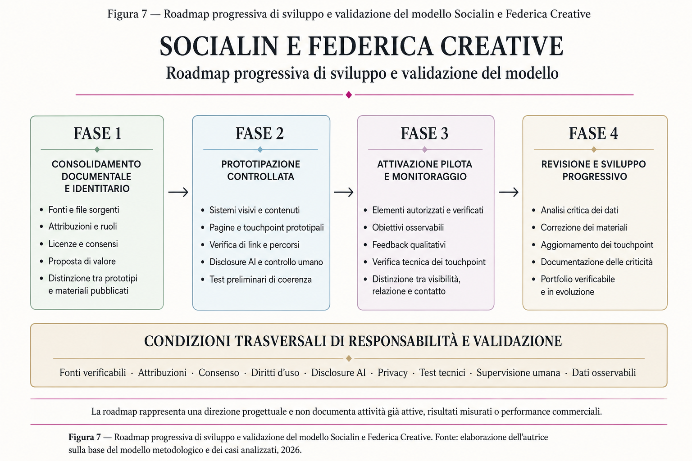

ESTETOLOGIA E AVATAR AI
Arte, identità e strategie di marketing
Socialin e Federica Creative come laboratorio creativo-strategico per integrare arte, marketing, AI, avatar iperrealistici, neuromarketing e casi operativi.

Coerenza visiva
Il framework organizza touchpoint digitali ed estetologia all'interno di un unico ecosistema metodologico integrato.
“Arte, visual design, marketing, AI e touchpoint in un ecosistema progettuale da validare progressivamente.”


Non costruisce una graduatoria tra i casi. Rende invece visibili differenze di settore, maturità progettuale, attribuzione dei ruoli e possibilità di attivazione.
Per Socialin, questa tabella funziona come uno strumento di diagnosi: consente di individuare gli asset già disponibili, gli elementi mancanti, le proposte ancora da validare e le condizioni necessarie prima di dichiarare risultati o performance.


Attribuzione dei Touchpoint
I loghi, il sito, la piattaforma e-commerce e la blockchain Mèlia sono infrastrutture preesistenti o di terze parti. Il contributo del Project Work è limitato alla proposta narrativa e visiva de "Il Tempo delle Api".

Elementi della Proposta
La proposta strategica organizza una sinergia editoriale tra copertine e canali digitali. I touchpoint, come la newsletter o le automazioni, sono da intendersi come scenari propositivi e non come strumenti attivi.

“Prototipo proprietario sperimentale. Non quinto caso cliente.”
Anteprime dei prototipi grafici Athy / Athanasya nel laboratorio.
I punti di forza riguardano l’integrazione tra cultura visuale, strategia, contenuti, branding, AI e touchpoint digitali. Le debolezze richiamano invece la necessità di consolidare documentazione, attribuzioni, licenze, consensi, fonti, analytics e prove tecniche.
Le opportunità indicano possibili sviluppi: workflow più ordinati, test pilota circoscritti, portfolio documentato e sperimentazioni responsabili con avatar e automazioni. I rischi ricordano che un prototipo non può essere presentato come risultato, né un sistema AI può sostituire controllo umano, trasparenza e responsabilità.

Per Socialin, la misurazione non deve fermarsi a like o visualizzazioni. Un progetto deve essere anche comprensibile, accessibile, coerente con il brand, tecnicamente funzionante e trasparente rispetto a fonti, ruoli, consenso e uso dell’AI.

Le principali risorse riguardano ricerca, produzione dei contenuti, revisione, manutenzione tecnica, aggiornamento dei touchpoint, consensi, licenze, privacy, supervisione umana e monitoraggio dei risultati.
I benefici potenziali riguardano una maggiore coerenza dell’identità, una comunicazione più riconoscibile, una migliore organizzazione dei processi e la possibilità di sperimentare avatar, AI, siti e automazioni in modo graduale.
I rischi ricordano che l’innovazione non è automatica: senza fonti verificabili, attribuzioni chiare, controllo umano, manutenzione e dati osservabili, un sistema digitale non può essere considerato validato.
